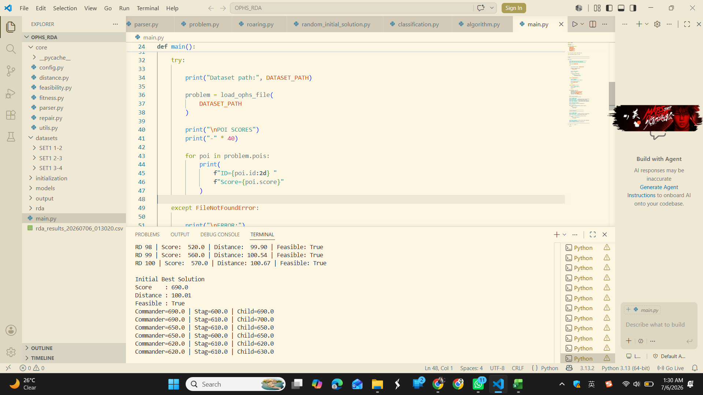
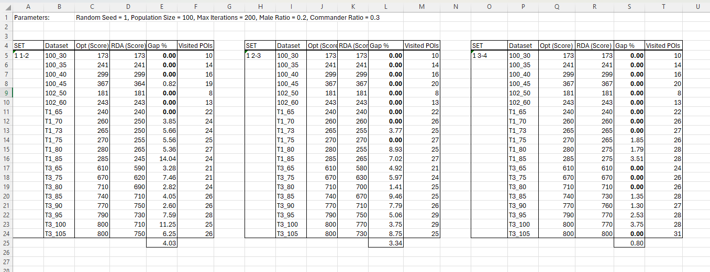

Signature Output 01 · Final Year Project (FYP)
Discrete Red Deer Algorithm for Solving the Orienteering Problem with Hotel Selection (OPHS)
 Research Poster
Research Poster
 Route Visualization
Route Visualization

Python Algorithm Code
Benchmark ResultsExpand Full FYP Technical Specifications, 10-Step Workflow & Benchmark Tables
Dataset SET1 1–2
20 instances · 3 hotels (1 extra) · 2 trips · Avg Gap: 4.03% (100% feasible)
Dataset SET1 2–3
20 instances · 4 hotels (2 extra) · 3 trips · Avg Gap: 3.34% (100% feasible)
Dataset SET1 3–4
20 instances · 5 hotels (3 extra) · 4 trips · Avg Gap: 0.08% (100% feasible)
10-Step Discrete RDA Workflow: (1) Generate Initial Feasible Population → (2) Roaring Male RDs → (3) Select Top γ=0.30 Male Commanders → (4) Stag Fighting → (5) Harem Formation → (6) Mating (7:3 POI Inheritance + 30% Mutation) → (7) Feasibility Checking & Repair → (8) Local Search (10 attempts) → (9) Next Generation Selection (Pop=100, Max Iter=200) → (10) Best Feasible Tour Output.
| SET1 3–4 Instance | Benchmark Optimum | Discrete RDA Score | Optimality Gap (%) | Visited POIs |
|---|---|---|---|---|
| 100-30-3-4 | 173 | 173 | 0.00% | 10 |
| 102-50-3-4 | 181 | 181 | 0.00% | 8 |
| T3-90-3-4 | 770 | 760 | 1.30% | 27 |
| T3-100-3-4 | 800 | 770 | 3.75% | 28 |
| T3-105-3-4 | 800 | 800 | 0.00% | 31 |